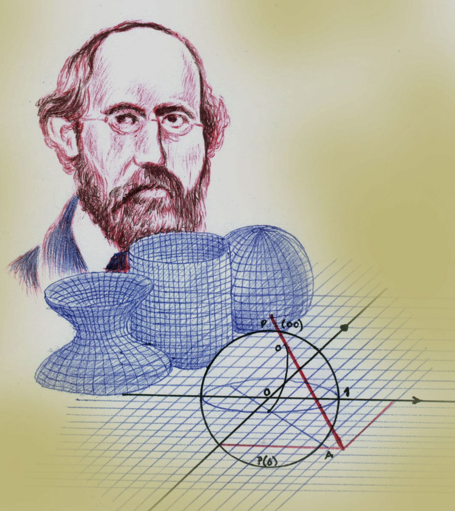

Luciana Jaramillo Del Castillo
Sofia Montoya Gonzalez
10 de Abril del 2023
Nombres: Luciana Jaramillo Del Castillo. Sofia Montoya Gonzalez.
Grupo: 8-3
Matemáticas, Consulta para la Pagina Web.
Biografía del Matemático Bernhard Riemman.
Bernhard Riemman fue un matemático que basó muchos de sus estudios en las teorías de Albert Einstein. Los cuales dieron como resultado el análisis geométrico intercalado entre número y círculos para formar, la hoy conocida, Hipótesis de Riemman. La misma se centra en la distribución numérica, su efecto en diferentes figuras y áreas topológicas. Gracias a sus descubrimientos, la topología ha sido integrada a las ramas de las matemáticas.
¿Cuáles fueron los principales aportes en la matemática de Bernhard Riemman?
Los aportes que hizo Riemann fue conseguir técnicas analíticas (derivadas e integrales) al igual que expresar la cantidad de números primos menores que un valor arbitrario en términos de los valores en que se anula ζ (es decir, donde vale 0).
¿Por qué fue mi elección?
Lo elegi porque me parece que fue muy bueno su aporte ya que género que la tipología haya sido integrada a las ramas de las matemáticas, y esto me intereso demasiado ya que tambien se centro en la distribucion numérica.
Biografía del Segundo Matemático Leonardo de Pisa o Leonardo Fibonacci.
Actual Italia (1175ª1240) matemático italiano que difundió en occidente los conocimientos científicos del mundo árabe, los cuales recopilo en el Liber Ábaci (Libro Del Abaco). Popularizo el uso de las cifras árabes y expuso los principios de la trigonometría en su obra práctica geométrica.
¿Principales aportes?
Leonardo pisa promovió el nuevo sistema de números, demostrando lo sencillo que era en comparación con los números romanos que se utilizaban en toda Europa

¿Por qué fue mi elección?
Mi elección fue la más apropiada ya que demostró lo sencillo que son los números comparándolos con los números romanos. Tema que me intereso demasiado.
¿Qué es la estadística y para qué sirve?
En la actualidad la Estadística se ha utilizado como una herramienta importante en los procesos de investigación, ya que permite planear la investigación, recolectar, organizar, representar, interpretar y analizar la información o datos que debemos estudiar por medio de encuestas o gráficas. Por ejemplo: obtener un resultado, comparar información, tomar mejores decisiones, etc.
Análisis que me gustaría hacer en mi barrio.
Me gustaría analizar cuál es el presupuesto más alto en la cuenta de servicios de cada familia o casa en la que se habitan una o varias personas y así poder recopilar información sobre esta y ver cada cuanto sube esta tarifa en el barrio.
Análisis 2 de que me gustaría hacer en mi institución.
Del grado 1 hasta el grado 10 cuantas personas (estudiantes) ganaron la prueba de promoción posterior y anticipada.